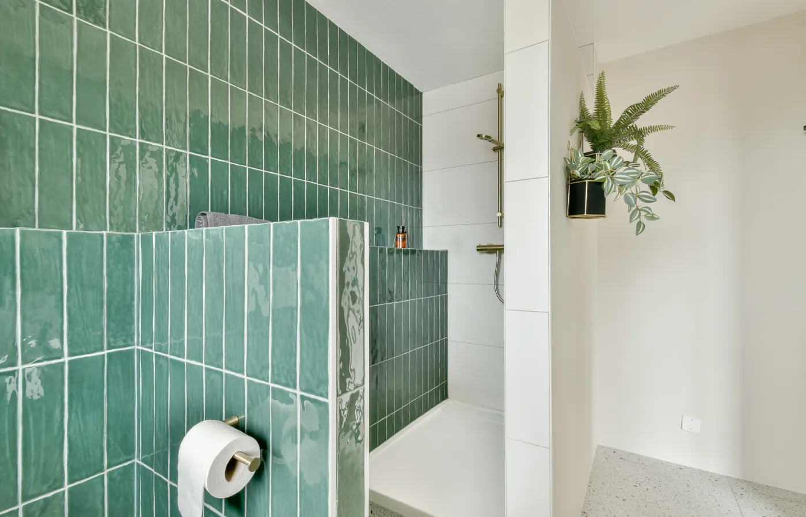
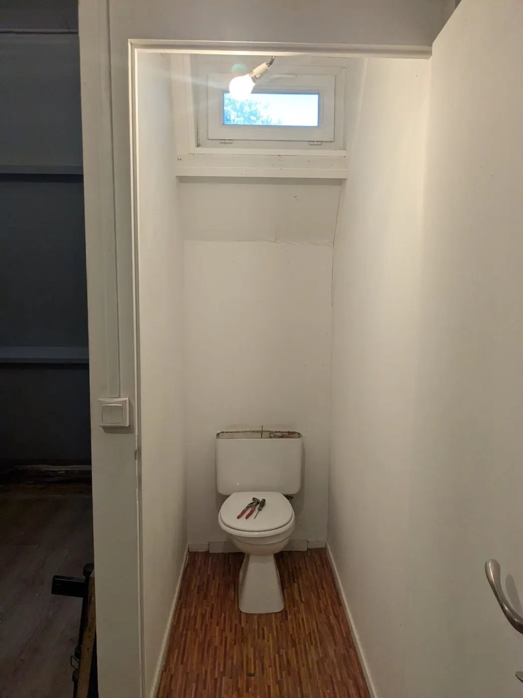
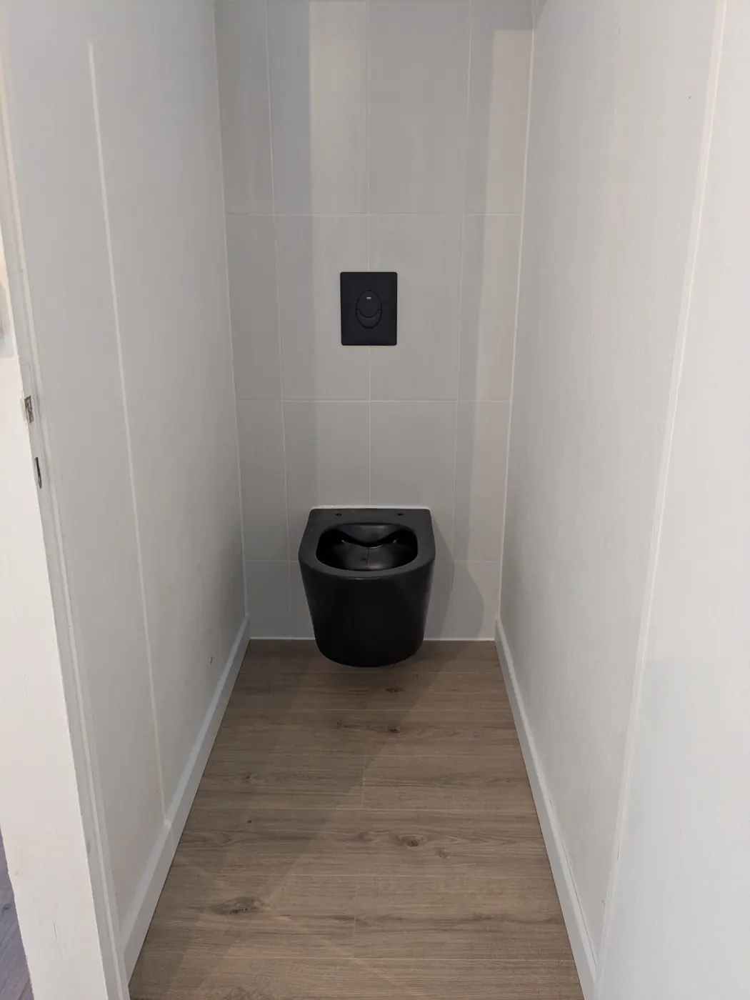

Refaire sa salle de bains ou ses toilettes est souvent un projet qu'on repousse, faute du bon moment. Pourtant, l'été réunit toutes les conditions pour lancer ses travaux sereinement : logement moins occupé, séchage plus rapide des matériaux, et une salle de bains toute neuve pour la rentrée. Voici pourquoi c'est la meilleure saison pour se lancer.

1. Un logement moins occupé, moins de gêne au quotidien
Vacances, séjours chez la famille, enfants en colonie : l'été est souvent la période où la maison se vide le plus. Un chantier de salle de bains ou de toilettes, même de courte durée, se vit beaucoup mieux quand on n'a pas à jongler avec la présence de toute la famille à la maison.
2. Des matériaux qui sèchent et respirent mieux
Enduits, colles à carrelage, joints, peintures : tous ces matériaux ont besoin de temps et d'air pour sécher correctement. En été, les fenêtres peuvent rester ouvertes, l'humidité ambiante est plus basse et les températures plus clémentes accélèrent le séchage, sans les contraintes du chauffage qui assèche trop vite ou, à l'inverse, de l'humidité hivernale qui ralentit tout.
3. Pas de chauffage à gérer pendant le chantier
Une salle de bains ou des toilettes hors service en plein hiver, c'est aussi composer avec le chauffage coupé dans la pièce, parfois plusieurs jours. En été, cette contrainte disparaît complètement : le confort du reste du logement n'est pas affecté par l'arrêt du chauffage dans la zone en travaux.
4. Une salle de bains prête pour la rentrée
Démarrer les travaux en été, c'est profiter d'une salle de bains ou de toilettes neuves dès la rentrée de septembre, sans avoir à vivre un chantier en pleine reprise du rythme scolaire et professionnel. Le timing est idéal pour clore le projet avant que le quotidien ne reprenne le dessus.
5. Des toilettes : un chantier court, parfait pour l'été
Contrairement à une salle de bains complète, la rénovation de toilettes (WC suspendu, faïence, revêtement de sol, peinture) est souvent un chantier de quelques jours seulement. C'est l'occasion idéale pour un petit projet d'été qui ne perturbe pas longtemps le quotidien, mais qui change complètement l'usage de la pièce.


Réalisation JOFAGIST : rénovation de toilettes
Envie de profiter de l'été pour vos travaux ?
Demandez une visite gratuite. Nous étudions votre projet et vous proposons un planning adapté à la saison.
Comment bien préparer son chantier d'été
Pour profiter pleinement de cette période, quelques réflexes simples :
- Anticiper la demande de devis dès le printemps, pour réserver un créneau avant que les plannings des artisans ne se remplissent
- Prévoir les délais de livraison des équipements (carrelage, robinetterie, meuble vasque) qui peuvent varier selon les fournisseurs
- Profiter d'une absence (vacances, déplacement) pour la phase la plus bruyante ou poussiéreuse du chantier
- Prévoir une solution provisoire si la salle de bains ou les toilettes concernées sont les seules du logement
Chez JOFAGIST, nous accompagnons chaque projet de A à Z : visite gratuite, devis détaillé, puis un planning de chantier tenu pour une livraison avant la rentrée.